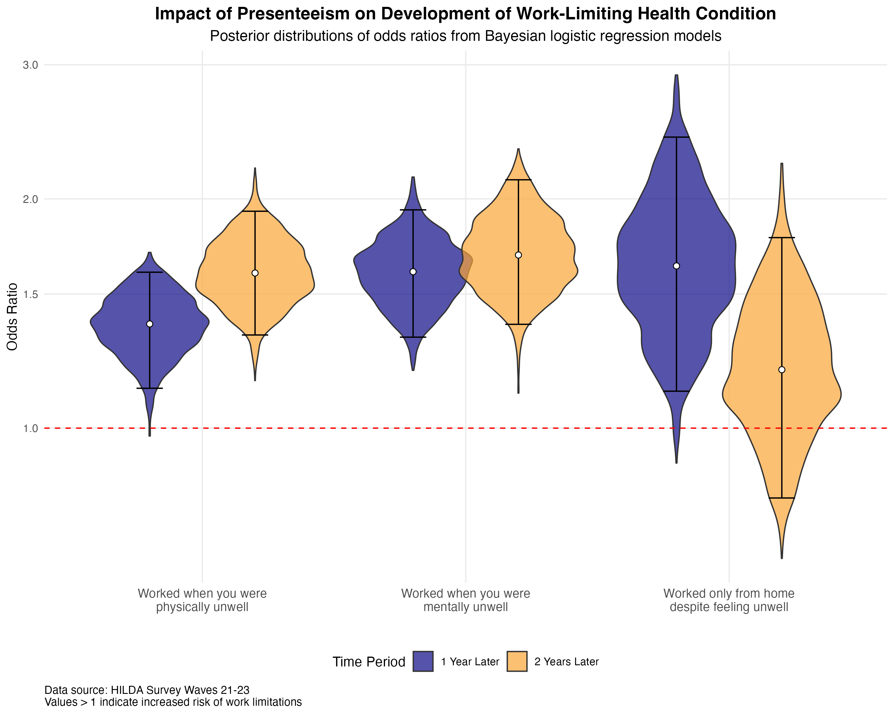
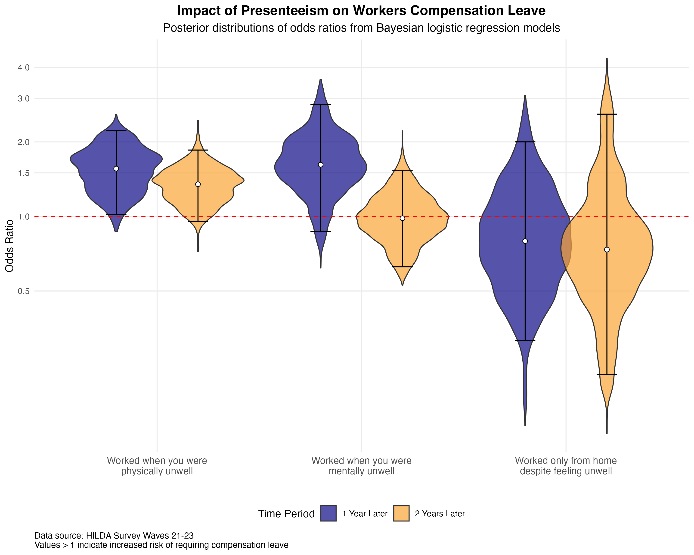
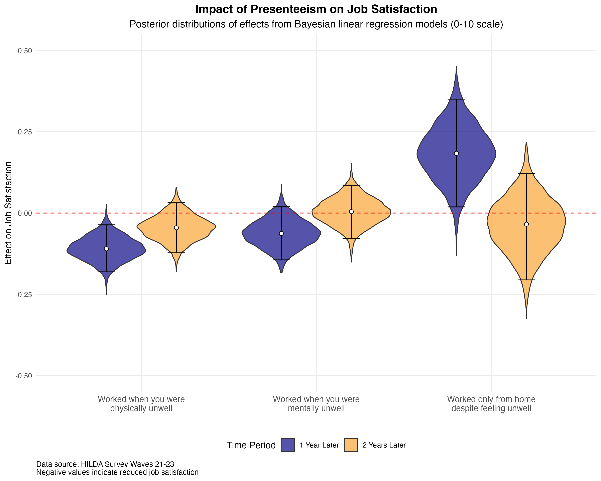

We've all been there: waking up with a cough or fighting through fatigue and body aches, yet still logging on or heading to the office. "I can't afford to fall behind," we tell ourselves, or perhaps "my team needs me." But what if pushing through illness today actually compromises your future work capacity?
The stakes are high for Australian businesses. A 2020 report from the Productivity Commission highlighted that mental-health-related presenteeism alone costs the Australian economy significantly, especially when left unaddressed in the workplace context. Yet most organisations still lack clear policies on when employees should stay home versus work through mild symptoms. The rise of remote work has further complicated matters, with many assuming that working from home while sick is a reasonable compromise. But is it really? What is the true cost of presenteeism? Is it more than just a few days of reduced performance?
Working Through Illness: What the Data Show
Using data from the HILDA survey, a long-term study of life in Australia, we examined around 7000 workers from 2021 to 2023 to examine whether working while unwell leads to future health problems. We used Bayesian logistic regression models to predict three outcomes: developing health conditions that limit work capacity, requiring workers compensation leave, and changes in job satisfaction. These were modelled as a function of three key predictors: working while physically unwell, working while mentally unwell, and working from home despite feeling unwell. We also controlled for baseline health status, age, gender, occupation, education, income, marital status, and number of children.
The figure below shows how presenteeism changes the odds of developing a health condition that limits one's ability to work, measured one and two years later. The "violin" plots display the range of plausible odds ratios from our Bayesian analysis, with wider sections indicating more likely values. The black lines represent 95% credible intervals, the range where we're 95% confident the true effect lies. An odds ratio of 1 (shown by the red dashed line) means no effect, while values above 1 indicate increased risk. For example, an odds ratio of 1.5 means presenteeism increases the odds of developing work limitations by 50%.

Even after controlling for existing health status, employees who worked while physically unwell had between 13% and 60% higher odds of developing a health condition that limited their ability to work within one year, rising to between 33% and 93% higher odds after two years. Mental presenteeism showed similarly concerning effects, with 32% to 93% higher odds after one year and 37% to 112% higher odds after two years. This means that among two people with identical health today, those who push through physical or mental illness are more likely to develop health problems that interfere with their work capacity later, with effects persisting into the second year. To put this in practical terms, if your baseline risk of developing a work-limiting condition is 10%, working while physically ill could increase that risk to somewhere between 11% and 16% within a year. Working from home while unwell also increased the likelihood of developing a work-limiting health condition. But working from home had a shorter-term impact, with 12% to 141% higher odds after one year, but no credible effect by year two.
Workers compensation claims showed less clear patterns. Physical presenteeism was associated with between 2% and 122% higher odds of requiring workers compensation leave after one year. This wide range suggests that physical presenteeism may indeed increase the likelihood of future workers compensation claims, but that there's considerable uncertainty in the magnitude of this relationship. By year two, there was no credible effect. Mental presenteeism and working from home while unwell showed no credible effects on workers compensation claims at either time point. The high uncertainty in these estimates likely reflects the relatively low frequency of workers compensation claims in this dataset. In practical terms, this means we can't confidently say whether presenteeism leads to more injury claims, though there are hints it might for physical presenteeism. However, the lack of evidence for an effect could also suggest that presenteeism isn't necessarily a strong predictor of future compensation claims. It also could be due to workplace cultures that both encourage presenteeism and discourage workers compensation. In any case, more research is needed to understand these relationships.

Job satisfaction outcomes revealed an interesting contrast. Physical presenteeism was associated with a small but reliable decrease in job satisfaction the following year, with employees reporting between 0.04 and 0.18 standard deviations lower satisfaction. By year two, this effect had faded. Mental presenteeism showed no credible effect on future job satisfaction at either time point. Surprisingly, working from home while unwell was associated with between 0.02 and 0.35 standard deviations higher job satisfaction after one year, though this effect also disappeared by year two. This unexpected positive effect might reflect employees appreciating the flexibility to work from home when feeling unwell rather than having to choose between complete absence or commuting while sick. In everyday terms, these satisfaction effects are relatively small. The negative impact of physical presenteeism on satisfaction is noticeable but not huge, while the positive effect of working from home while sick suggests that flexibility itself can be valued by employees even when they're not feeling their best.

Overall, our findings suggest that presenteeism carries real health costs that compound over time. Both physical and mental presenteeism substantially increase the risk of developing work-limiting health conditions, with these effects persisting or even intensifying two years later. While the impacts on workers compensation and job satisfaction were less consistent, the clear message is that working through illness today may compromise work capacity tomorrow, even after accounting for current health status.
Building a Culture That Protects Long-Term Work Capacity
These findings point to several strategies organisations might consider to protect their workforce's long-term health and productivity.
First, managers may want to reconsider how sick leave policies are communicated and enforced. Given that both physical and mental presenteeism show similar risks for future work limitations, policies might explicitly address both types of unwellness. This could include normalising mental health days and ensuring employees understand that working through any illness, not just physical symptoms, can have lasting consequences. A systematic review by Cancelliere et al. (2011) found evidence that some workplace health promotion programs can improve presenteeism — especially when they include elements such as leadership involvement, health screening, individually tailored interventions, and a supportive workplace culture.
Second, the finding that working from home while unwell had shorter-lived health impacts but actually increased job satisfaction suggests organisations need to think carefully about work-from-home policies. Rather than a blanket "work from home if you're sick" approach, guidelines could distinguish between conditions where complete rest is needed versus situations where flexible, reduced-capacity work from home might be appropriate. Managers might consider offering "recovery days" where employees can work reduced hours from home if they feel able, without the pressure of full productivity expectations. Karanika-Murray et al. (2021) emphasise that effective presenteeism management requires aligning organisational culture, leadership behaviours, and workplace practices to avoid reinforcing norms that prioritise attendance over health. Manager training, role modelling, and supportive policies are all important for creating a climate where employees feel safe to rest and recover without fear of judgment or lost productivity.
Finally, given the uncertainty around workers compensation outcomes, organisations might benefit from better tracking of presenteeism patterns and their consequences. This could involve regular pulse surveys asking about working while unwell, followed by longitudinal tracking of health outcomes and productivity. Such data could help identify departments or roles where presenteeism is particularly common or costly. As noted by Karanika-Murray et al. (2021), tools like annual health risk appraisals can help forecast workforce health risks and inform targeted presenteeism interventions.
Managing presenteeism isn't just about today's productivity. It's about protecting employees' ability to work effectively in the future. Policies that seem costly in the short term, such as encouraging genuine sick leave use, might actually preserve workforce capacity over the long run. The evidence suggests that when employees work through illness, they're not serving the organisation. They're borrowing against their future health, and eventually, that debt comes due.